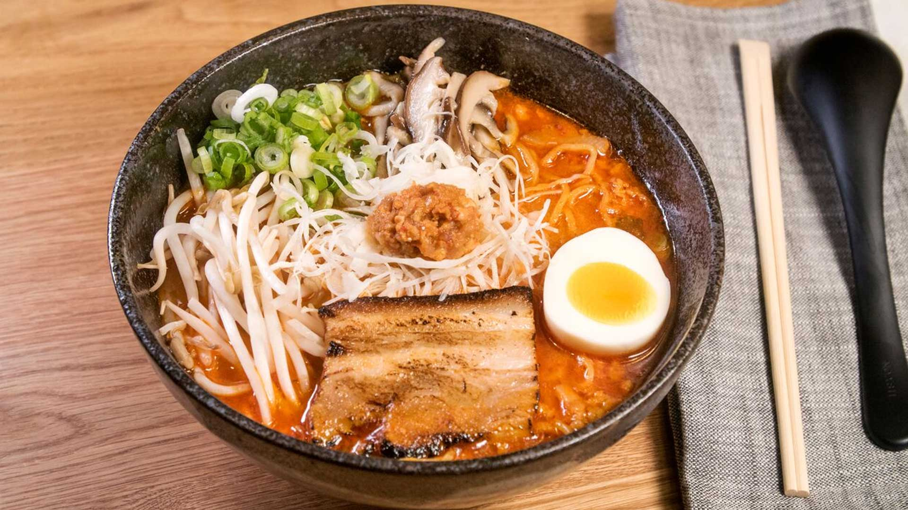

Los mejores arroces asiáticos

No te pierdas nuestra selección de Sushi

Nuestro querido Ramen, irresistible
+34 622 84 89 94
correoejemplo@gmail.com
Comida China
Comida Japonesa
Comida Coreana
Shokumotsu consiste en un restaurante que vende todo tipo de comida asiática, especializandose
en la comida china, japonesa y coreana.
Nuestro objetivo es transportar al continente asiático a nuestros clientes con tan solo un bocado
sintiendo todo el sabor oriental desde su querida ciudad de Madrid.
También queremos conseguir que esa gente que reniega un poco de lo desconocido y no lo sacas nunca
de su bar con sus tapitas y su jammoncito, pruebe la auténtica comida asiática y queden fascinados con
sus encantos. Desde las comidas picantes y agridulces de la comida china, pasando por el mítico kimmchi
famoso en Corea, hasta el auténtico Shoyu Ramen de Japón, todo esto con auténticos ingredientes exportados
de sus respectivos países.
Ven y disfruta de nuestra profesionalidad, no te arrepentirás.